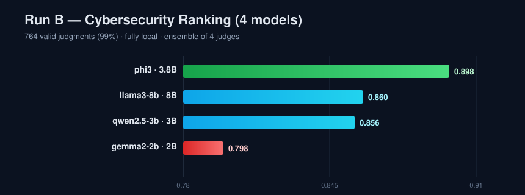

Run B · Fully local (Ollama)
4 models · 12 questions · ✅ Complete
After Run A hit the free-cloud ceiling, Run B went fully local (no rate limits) to obtain the first complete, reproducible ranking. Four models across four vendors, each playing all three roles, with an explicit 5-factor rubric distilled from Run A's auto-generated criteria.
All five phases completed; 764 of 768 judgments valid (99%):
| # | Model | Vendor | Size | Score |
|---|---|---|---|---|
| 🥇 | phi3 | Microsoft | 3.8B | 0.898 |
| 🥈 | llama3-8b | Meta | 8B | 0.860 |
| 🥉 | qwen2.5-3b | Alibaba | 3B | 0.856 |
| 4 | gemma2-2b | 2B | 0.798 |

phi3 beat the 8B llama3 — the first sign that
bigger is not always better. The consensus ranking was stable across all four judges.QUESTION (teacher)
A user is concerned about online privacy on public Wi-Fi networks, specifically regarding data breaches and identity theft. Discuss the risks of public Wi-Fi and outline practical steps to mitigate them.
ANSWER · llama3-8b · ensemble score 1.00
Public Wi-Fi exposes users to data interception by attackers on the unsecured network, and to identity theft where weak authentication lets attackers capture sensitive information. Mitigations include using a VPN, preferring HTTPS, disabling auto-connect, and avoiding sensitive transactions…
All reports in one place.
STUDENTPer-model scores & rubric heatmaps.
JUDGEJudge bias & reliability.
DATAQuestions, responses, judgments (JSONL).
Did it succeed? Complete success — a full 4-model ranking at 99% validity, fully local and reproducible.
Problems & fixes: the first attempt failed Phase 1 because small models could not emit the JSON that automatic rubric generation needs → we supplied an explicit rubric (fundamental fix). On the 13.7 GB laptop, loading four models at once froze the machine → we capped Ollama to one model in memory at a time (fundamental fix).
What we concluded & did next: model scale is not destiny, judge bias generalizes, and the ensemble is robust — so we scaled up to Run C (7 models, 20 questions) with controlled same-vendor size pairs to test "bigger isn't better" directly.
Full write-up: docs/04-run-B-findings.md